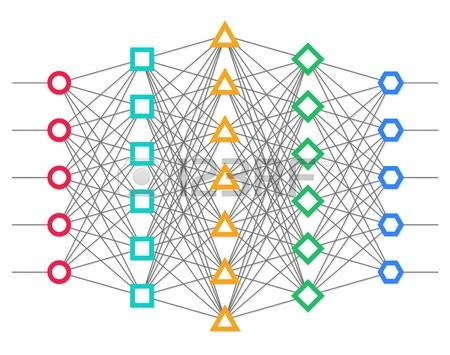

Page Title, h1 Markdown text template¶
Every Document Starts with #, a title for this documentation
You only need to modify this Markdown file according with your necesities. If you change the Markdown file name, remember also to change the name in the index.rst file or where the “.. toctree::” is.
Subhead, h2¶
Use ## for subsection
Subhead, h3¶
use ### as further section division
Code example: Add the URL in urlpatterns in app/urls.py:
urlpatterns = [
url(r'^register/$', app_views.register, name='register'),
]
More instructions¶
Syntax highlighting can be used with triple backticks, like so:
#Fibonacci, tuple assignment
parents, babies = (1, 1)
while babies < 100:
print 'This generation has {0} babies'.format(babies)
parents, babies = (babies, parents + babies)
Here we continue with more code documentation examples.
A link to Jekyll Flash. A literal link http://github.com/parrondo/jekyll-flash/
An image, located within /images/markdown

- A bulletted list
- alternative syntax 1
- alternative syntax 2
- an indented list item
- An
- ordered
- list
Inline markup styles:
- italics
- bold
code()
Blockquote
Nested Blockquote